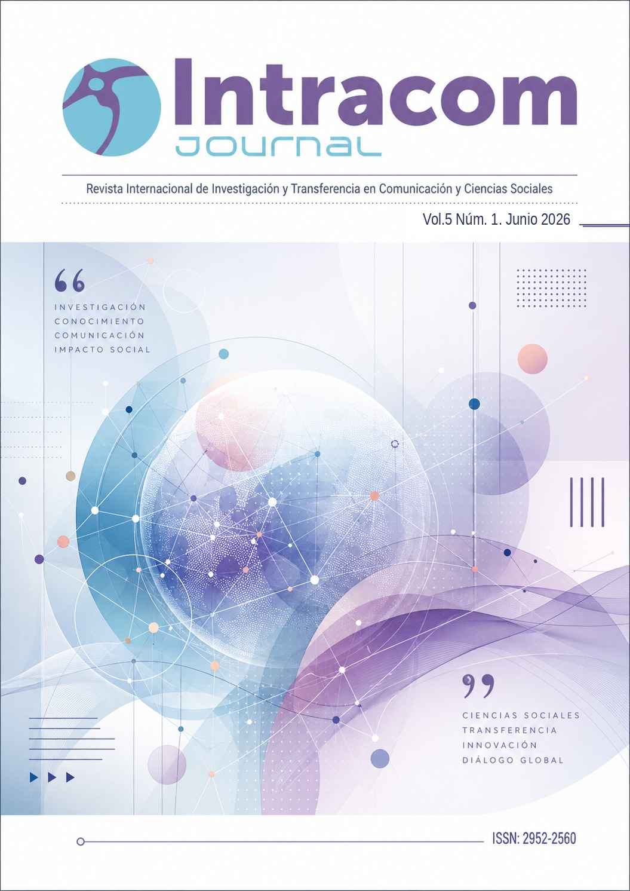
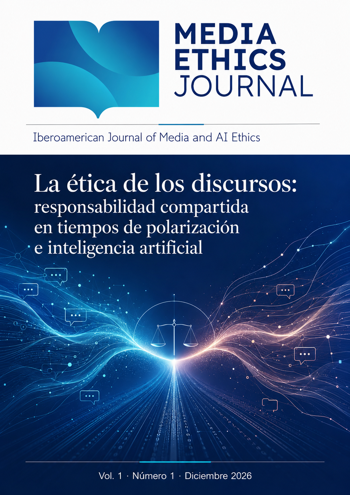

Sello editorial académico
Sello editorial académicoLibros académicos iberoamericanos, revisados por pares externos y en acceso abierto.
Ediciones Intracom publica monografías de investigación y obras colectivas en tres colecciones. Cada obra pasa una revisión doble ciego con al menos dos informes externos y se publica en abierto, con ISBN y DOI.
Propuesta conceptual de cubiertas de colección
Cómo publicamos
Ver la política editorial completa →Verificación formal
Comprobamos que la propuesta encaja en una colección y cumple las normas.
Evaluación editorial
La dirección de la colección valora alcance, originalidad y calidad.
Doble ciego externo
Dos especialistas ajenos a la editorial y a la institución de los autores.
Decisión razonada
Siempre por escrito. Ningún pago influye en la decisión.
02 / 08 · Colecciones
Tres colecciones, un mismo rigor
Cada colección tiene su propia dirección y comité científico, con afiliación y ORCID públicos. Elige la que encaja con tu investigación.
03 / 08 · Títulos
Títulos anteriores
Publicados antes de la creación de las colecciones, en acceso abierto. Cada portada lleva a su ficha completa.
04 / 08 · Revistas
Tres revistas científicas
Ediciones Intracom publica también tres revistas. Cada una dialoga con una colección: si tu trabajo no encaja como libro, puede encajar como artículo.

Intracom Journal
Investigación y transferencia en comunicación y ciencias sociales
ISSN 2952-2560
Vol. 5, núm. 1 · junio 2026

Media Ethics Journal
Iberoamerican Journal of Media and AI Ethics · Ética de los medios e inteligencia artificial
ISSN
Vol. 1, núm. 1 · diciembre 2026
DDHHGlobal
Revista Iberoamericana de Derechos Humanos y Globalización
ISSN
Núm. 1 · diciembre 2026
05 / 08 · Publica con nosotros
Publica tu libro con nosotros
Qué aceptamos, cómo es el recorrido de una propuesta y cuánto cuesta. Sin letra pequeña.
✓Qué publicamos
- Monografías de investigación
- Obras colectivas temáticas coordinadas
- Tesis doctorales revisadas y adaptadas al formato libro
×Qué no publicamos
- Actas y memorias de congresos
- Comunicaciones sin ampliar
- Manuales, libros de texto y guías
- Compilaciones sin estudio introductorio
- Traducciones sin aportación crítica
El recorrido de una propuesta
Cómo funciona la revisión →- 1
Propuesta
Envío del manuscrito o proyecto a través de la plataforma.
Plazo - 2
Verificación formal
Encaje en la colección, normas y control antiplagio.
Plazo - 3
Evaluación editorial previa
La dirección de la colección valora el interés científico.
Plazo - 4
Revisión externa doble ciego
Mínimo dos informes de especialistas externos.
Plazo - 5
Decisión razonada
Aceptar, revisiones menores o mayores, o rechazar. Por escrito.
Plazo - 6
Producción y publicación
Edición, maquetación, ISBN, DOI y depósito en abierto.
Plazo
La aceptación depende únicamente de la revisión por pares. Ningún pago influye en la decisión editorial, ni la acelera.
El precio incluyeExisten exenciones para obras seleccionadas. La tarifa se comunica solo después de la aceptación.
Convocatorias abiertas
Se actualizan con frecuenciaURL de la plataforma editorial
06 / 08 · Política editorial y calidad
Política editorial
Todo el proceso, descrito por escrito y enlazable. Cada política tiene un resumen visible; despliégala para leer el texto completo.
Revisión por pares
El núcleo de la editorial. Toda obra y todo capítulo pasan por especialistas externos antes de publicarse.
Modalidad: doble ciego, mínimo dos informes
Ni autores ni revisores conocen la identidad de la otra parte. Cada obra, y cada capítulo en las obras colectivas, recibe al menos dos informes externos.
Ediciones Intracom aplica revisión por pares de doble ciego a todas las obras que publica. Cada monografía recibe un mínimo de dos informes de revisión externos. En las obras colectivas, cada capítulo se evalúa de forma individual con el mismo mínimo de dos informes, además de la valoración del conjunto de la obra.
Si los dos informes son discrepantes, la dirección de la colección solicita un tercer informe antes de tomar una decisión.
#politica-modalidadQuién revisa
Especialistas ajenos al equipo editorial, al comité de la colección y a la institución de los autores.
Los revisores son especialistas reconocidos en el área de la obra y cumplen tres condiciones de independencia:
- No forman parte del equipo editorial de Ediciones Intracom.
- No pertenecen al comité científico de la colección en la que se evalúa la obra.
- No pertenecen a la misma institución que ninguno de los autores.
Antes de aceptar el encargo, cada revisor declara la ausencia de conflictos de interés con la obra o con sus autores.
#politica-revisoresCómo se garantiza el anonimato
Manuscritos anonimizados, comunicación siempre a través de la secretaría editorial y metadatos eliminados de los archivos.
La secretaría editorial retira del manuscrito nombres, afiliaciones, agradecimientos, autocitas identificables y metadatos de los archivos antes de enviarlo a revisión. Autores y revisores nunca se comunican directamente: todo el intercambio pasa por la plataforma editorial.
Los informes se devuelven a los autores sin datos que permitan identificar a quien los firma.
#politica-anonimatoCriterios de evaluación y decisiones posibles
Originalidad, solidez metodológica, relevancia y calidad expositiva. Cuatro decisiones posibles, siempre razonadas.
Los revisores valoran la originalidad y la aportación al campo, la solidez teórica y metodológica, la pertinencia y actualidad de las fuentes, la coherencia de la estructura y la calidad de la exposición.
Plazos habituales
Tiempos orientativos de cada fase, publicados y medidos cada año en el bloque de transparencia.
Plazo para la primera decisión: . Plazo hasta la publicación tras la aceptación: .
Los tiempos reales medios se publican cada año en el apartado de transparencia.
#politica-plazosQué ocurre con las obras rechazadas
El rechazo se comunica de forma razonada y la obra no se deriva a ninguna otra publicación del grupo.
Toda obra rechazada recibe una comunicación escrita con los motivos de la decisión y, cuando la hay, los informes de revisión anonimizados. Ediciones Intracom no deriva obras rechazadas a ninguna otra publicación, revista o servicio de Portal Intracom.
#politica-rechazoÉtica y buenas prácticas
Principios que obligan por igual a autores, revisores y equipo editorial.
Adhesión a los principios de COPE
Seguimos las directrices del Committee on Publication Ethics para todo el proceso editorial.
Ediciones Intracom sigue los principios de transparencia y buenas prácticas del Committee on Publication Ethics (COPE) y sus diagramas de actuación ante posibles malas prácticas.
#politica-copeAutoría, conflictos de interés y plagio
Declaración de contribuciones, declaración de conflictos y control antiplagio en todos los manuscritos.
Figuran como autores quienes han contribuido de forma sustancial a la obra. Cada autor declara su contribución y cualquier conflicto de interés, financiación o relación relevante.
Todos los manuscritos se someten a control antiplagio antes de la revisión externa.
#politica-autoriaUso de inteligencia artificial generativa
Los autores declaran cualquier uso de IA generativa. Los revisores no pueden introducir manuscritos en herramientas de IA.
Una herramienta de IA no puede figurar como autora. Los autores deben declarar qué herramientas de IA generativa han utilizado y con qué fin; la responsabilidad sobre el contenido es siempre suya.
Los revisores no pueden cargar manuscritos, total o parcialmente, en herramientas de IA generativa, porque vulneraría la confidencialidad del proceso.
#politica-iaCorrecciones, erratas y retractaciones
Procedimiento público para corregir errores y retirar obras cuando sea necesario, dejando constancia visible.
Las erratas que no afectan al contenido científico se corrigen con una nota de corrección enlazada a la versión original. Los errores sustanciales o las malas prácticas probadas pueden dar lugar a la retractación de la obra o del capítulo, que se mantiene accesible con una marca visible y una nota que explica los motivos.
#politica-correccionesReclamaciones y apelaciones
Canal identificable para apelar una decisión o presentar una reclamación, con respuesta motivada.
Los autores pueden apelar una decisión editorial de forma razonada escribiendo a . La apelación la revisa una persona del consejo editorial que no haya intervenido en la decisión original.
#politica-reclamacionesLímite de endogamia
La dirección y los comités no firman más del 20 % de los títulos de su colección.
Los miembros de la dirección y del comité científico de cada colección no pueden firmar, como autores o coordinadores, más del 20 % de los títulos publicados en ella. Sus propuestas siguen el mismo proceso de revisión externa, y quedan apartados de cualquier decisión que les afecte.
#politica-endogamiaAcceso abierto y licencias
Todo lo que publicamos se puede leer y descargar sin barreras.
Licencia Creative Commons
Publicación en acceso abierto inmediato bajo licencia Creative Commons .
Todas las obras y capítulos se publican en acceso abierto desde el día de su publicación, con descarga libre del PDF y sin registro.
#politica-licenciaDerechos de autor y depósito en repositorios
El autor conserva sus derechos y puede depositar la versión publicada en repositorios institucionales.
Los autores conservan los derechos de autor sobre su obra. Pueden depositar la versión editorial final en repositorios institucionales o temáticos, citando la edición original y su DOI.
#politica-derechosPreservación de los contenidos
Conservación a largo plazo de todas las obras publicadas.
Sistema de preservación digital:
#politica-preservacion07 / 08 · Transparencia
Nuestros indicadores, a la vista
Cada año publicamos, por colección, los datos que muestran cómo funciona de verdad el proceso editorial. Comparables de un año a otro.
| Colección | Propuestas recibidas | Tasa de aceptación% | Hasta 1.ª decisióndías, media | Hasta publicacióndías, media | Revisores externos% · internacionales % | Autores externos a la red% |
|---|---|---|---|---|---|---|
| Estudios de Género | — | — | — | — | — | — |
| Pensamiento Crítico y DD. HH. | — | — | — | — | — | — |
| Estudios de Comunicación | — | — | — | — | — | — |
La primera serie se publicará al cerrar el primer año de actividad
Las colecciones abren sus primeras convocatorias en 2026. Publicaremos los indicadores de ese ejercicio en , con la misma estructura que ves aquí.
08 / 08 · Sobre la editorial
Parte de Portal Intracom
Ediciones Intracom es el sello editorial académico de Portal Intracom, agencia de transferencia del conocimiento del espacio académico iberoamericano.
Nace dentro de una comunidad que ya organiza congresos internacionales, publica revistas científicas y coordina una red de grupos de investigación. La editorial da a ese trabajo una salida en forma de libro, con un proceso de revisión independiente.
¿Tienes un libro que merece una revisión seria?
Envía tu propuesta o consulta primero las normas para autores.